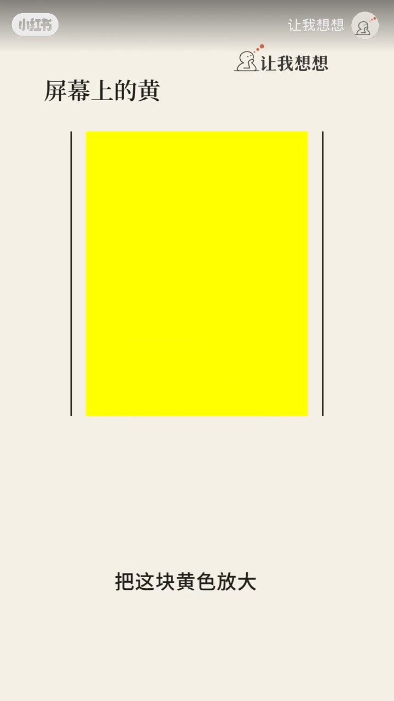
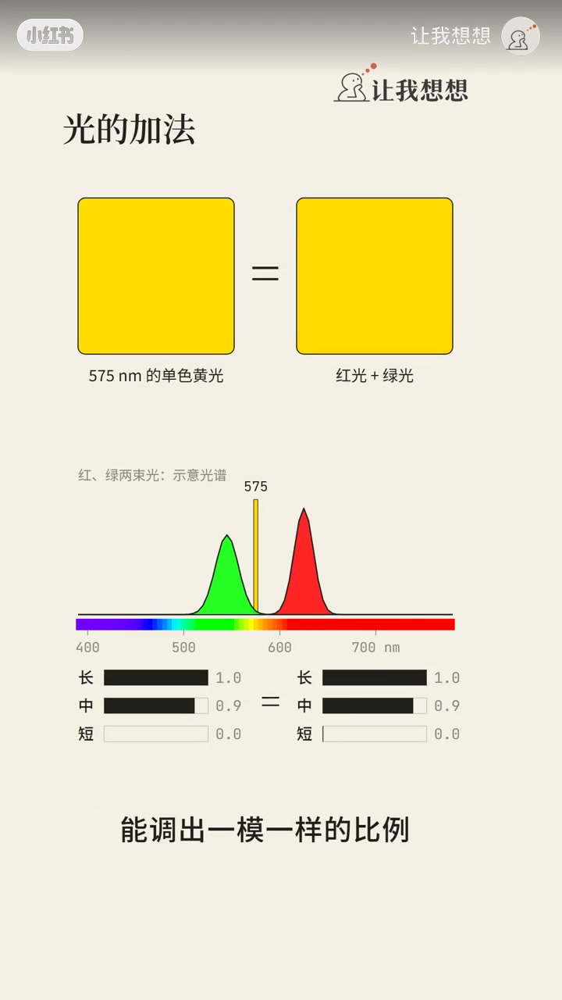
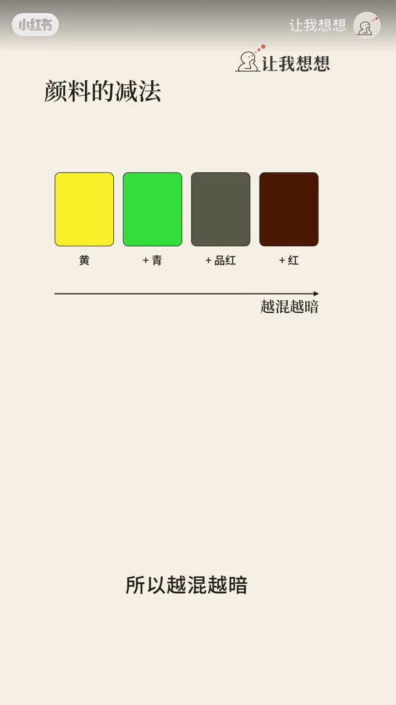
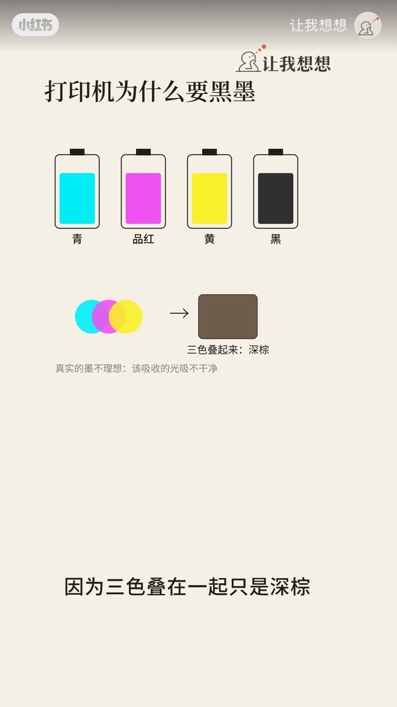
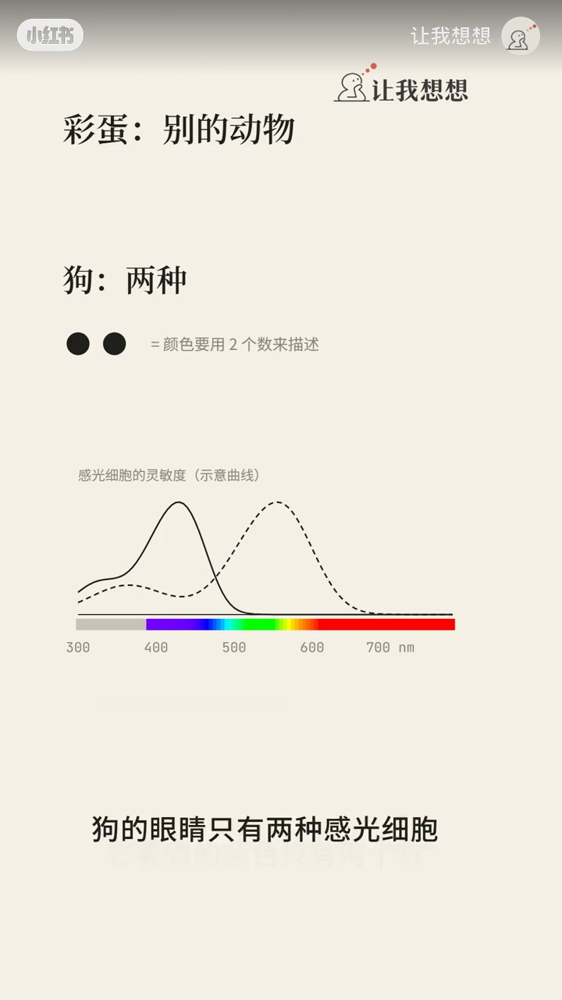

光加法 vs 颜料减法
同样是红加绿为什麼光變成了黄色,光是加法,颜料是减法,红颜料加绿颜料,几乎把所有的光都吃掉了,剩下的就是一團泥。

[00:10] 光是加法混色：红光+绿光→黄；颜料是减法，红+绿近似把光吃光成「泥」
Light mixes additively (R+G→yellow); paint mixes subtractively into muddy brown.

[00:40] 美术课红黄蓝也能混很多色，是实用选择；眼睛把光加总，耳朵却能拆声音
RYB is practical in art class; eyes sum light, ears can separate sounds.

[01:10] 狗两锥、许多鸟四锥还能看紫外；你看见的颜色由 RGB 三通道混出
Dogs have two cones; many birds four (incl. UV); your colors are RGB mixes.

[01:40] 收束：同分异构的「红加绿」在光与颜料里机制完全不同
Same “red+green” phrase, opposite mechanisms in light vs pigment.

[02:10] 互动收尾：让我想想，你会了吗
Closing prompt: did you get it?
眼睛把几路光加总成一个色，耳朵却常能拆开声音。狗大约两锥、许多鸟四锥（含紫外）；你此刻颜色多由红绿蓝三通道混出。